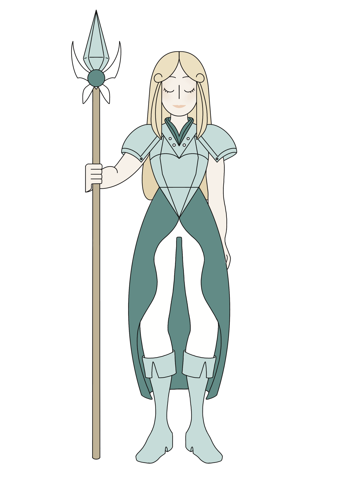
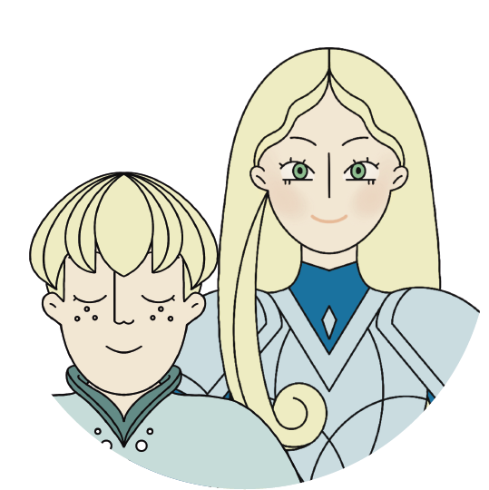
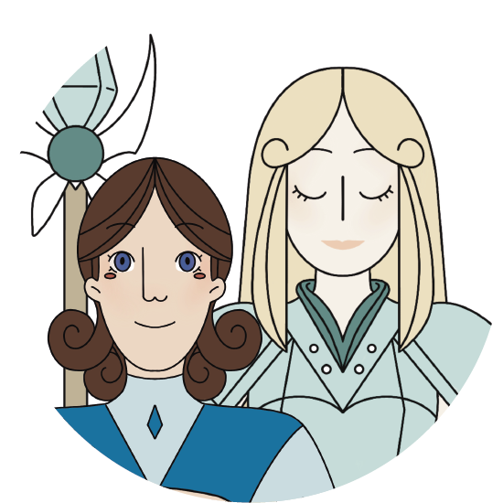

FAITES VOTRE CHOIX


- 


La chevalière Alessandra
retourne seule sur l’autre rive.

La chevalière intrépide Elisabeth
retourne seule sur l’autre rive.

La chevalière fougueuse Alessandra
et le page Léandre retournent
ensemble sur l’autre rive.

La chevalière Marie-Juliette
et le page Lucius retournent ensemble
sur l’autre rive.